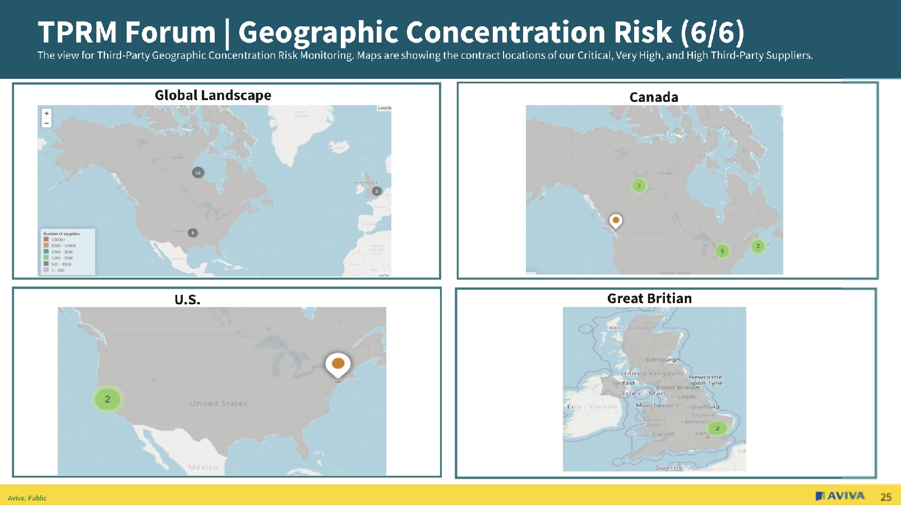

My Co-op Work Term Experiences
Introduction
This website aims to give an in-depth overview of my co-op work terms during my time in the Bachelor of
Computing Co-op program. Through reading this website, you will be able to learn more about the companies I
worked for, my specific roles and responsibilities, the goals I set for myself at each placement, and more.
NCR - Software Developer

Date Range: May 2023 - August 2023
About NCR
NCR Corporation is a large global enterprise technology company that specializes in software and hardware
services that facilitate transactions for a very large range of sectors: primarily banking but also
hospitality, retail, and telecommunications. Some of their products include automated teller machines
(ATMs), self-checkout kiosks, POS systems, interactive teller machines (ITMs), and more. An area of computer
science NCR relates to is cybersecurity, as cybersecurity principles like secure user authentication methods
are essential due to their products handling financial transactions and personal user data. NCR Corporation
has over 34,000 people working across 180 countries worldwide, their headquarters is in Atlanta, Georgia,
and I worked at the Waterloo office.
Goals
I had three primary learning outcomes for this work term: enhance my proficiency in React and JavaScript to tackle more complex software development tasks, develop teamwork skills and contribute effectively to collaborative projects, and improve my oral communication abilities, specifically during meetings like stand-ups and sprint planning.
My goals were closely related to my job tasks. For instance, my first goal was to improve my knowledge and skills in React and JavaScript, which I used daily at work. My second and third goals were aimed at improving soft skills, such as teamwork and communication, that were crucial in collaborative tasks and meetings.
The skills I'm focusing on have both immediate and long-term benefits for my career as learning React and JavaScript will make me more versatile and valuable as a software developer, teamwork skills will enhance my ability to collaborate on projects, which is essential in any professional setting, and improved oral communication skills will help me articulate my ideas more clearly, contributing to project planning and effective problem solving.
I believe I achieved my goals related to improving my communication and teamwork skills. My team played a huge role in this success, as my colleagues and I practised communication and collaboration that allowed me to become better at and refine these skills regularly.
I also achieved my technical goal of becoming more proficient in React and JavaScript. The hands-on work and complex tasks I was assigned provided me with the ability to learn and apply these technologies effectively. However, while I have made significant progress in React and JavaScript, I believe there is still much more to learn to become truly proficient, and I look forward to continuing my journey in mastering them.
Job Description
During my work term at NCR, I was primarily responsible for developing and maintaining two platforms: the TellerUI App (as seen below) and D3 Digital Banking platform. Both of these platforms are integral to streamlining financial transactions in the banking sector and enhancing user experience. For this job, a strong understanding of React and Node.js was crucial, while also using code quality tools like Wallaby, WhiteSource and SonarQube. While some foundational skills were learned during my academic courses, the hands-on experience at the job greatly accelerated my learning and proficiency.
One of the tickets I worked on focused on handling return media messages when cancelling a transaction in the TellerUI App. The goal was to ensure that cash was returned to the customer safely, and that the transaction could be effectively canceled. This involved various steps, such as displaying return cash processing messages and a final confirmation message.
These are examples of some of the return media messages I created:
Another significant task was to ensure unit test coverage for certain components in the itm-components package, specifically RemoteHome and RemotePanel. This involved writing tests to cover new functionalities and ensuring the existing code was up to standard.
Conclusions
My co-op work term at NCR has been a valuable experience, providing me with useful both technical and soft skills. From enhancing my knowledge in React and Node.js to improving my teamwork and communication abilities, this term has been pivotal for my professional development.
I had the opportunity to work on meaningful projects, such as the TellerUI App and the D3 Digital Banking platform, which have broad impacts on financial transactions and user experience in the banking sector. Through these projects, I also gained practical experience in code quality analysis using tools like Wallaby, WhiteSource, and SonarQube.
I hope this provided insight into a comprehensive overview of my growth and contributions during my co-op term at NCR. It highlights not just the technical skills I've learned, but also the soft skills I've gained, making me a well-rounded employee in the tech industry.
Acknowledgments
I would like to give a big thank you to my colleagues Damien Dorobek and Ilija Milisav for mentoring me throughout this term and providing me help and assistance to grow and learn as a developer.
Image Credits
NCR Logo: Click here
Schema App - Software Developer

Date Range: September 2023 - December 2023
About Schema App
Schema App is a technology company specialising in creating structured data solutions to improve search engine optimization. Search engines use structured data to read and understand the content of pages. At Schema App they use schema markup, which is a type of structured data, to create tools and services that help businesses/people structure their website content in a way that is more easy to understand by search engines. This helps the business/person in many ways as content that is easily understood by search engines will give the businesses more exposure of their sites in relevant search results, thus gaining more potential clients. This area of computer science is related to structured data, search engine optimization, and web development. Schema App is located in Guelph, Ontario and since it is a start-up company it has an employee size of around 30 people.
Goals
I had set a couple goals for myself this work term. I wanted to gain knowledge in Vue.js as this was the language I was primarily working in, gain proficiency in Amazon Web Services used at Schema App, communicate effectively, and improve my teamwork skills. I wanted to specifically learn these skills as I feel the mix of both soft skills and technical skills will improve my abilities as a developer. Gaining knowledge in another language would make me more versatile as a developer and learning about Amazon Web Services would allow me to expand my possibilities in options for work placements in the future, as well as improving my communication and teamwork skills will help my coworkers and I get along and complete work more efficiently. I also have recently realised I have an interest in project management, so especially soft skills like communication and teamwork are essential for a career in tech like that.
I believe I achieved my goals related to gaining knowledge in Vue.js and improving my communication & teamwork skills. Having frequent meetings throughout the week and constantly working alongside my coworkers in an environment where I was encouraged to ask questions definitely contributed to my success of these goals. One goal I would say I was less successful in completing was gaining proficiency in Amazon Web Services used at Schema App as this was not realistic. My coworkers and manager had told me gaining proficiency with Amazon Web Services is already hard enough as is, but given my short 4 month period of employment and the fact that I had other challenging projects to work on at the time, it was unrealistic to dedicate time to being proficient in Amazon Web Services. However, I did familiarise myself with some of the ones we use such as CodePipeline and CodeBuild, through one on one meeting tutorials provided by my coworkers when we had the time.
Job Description
During my work term at Schema App, I worked in frontend creating and enhancing components, and fixing bugs. A skill needed for this was knowledge in Vue.js, despite not learning Vue.js prior to the job in my classes, I was able to learn it hands on at the job through video tutorials, help from my coworkers, and trial and error.
One of the tickets I was responsible for working on was creating a help section component for the Schema App homepage (see below). I had to create the component, add a collapse function to it, and make it so that the help section starts in an open state with the user being able to close it if needed, but whenever the user refreshes the page it will remain in the state the user last had it in.

Another task I worked on was creating visualisations of knowledge graphs for different companies Schema App was working with, by using SPARQL to query RDF data. Similar to my tickets with Vue.js, I did not learn much about SPARQL in class prior to the job and also had to learn this on the job. These knowledge graphs were used in Schema App’s Quarterly Business Reviews presentation.
These are examples of some of the visualisations of knowledge graphs I created for one of Schema App's clients:
Conclusions
My 4 month co-op work term at Schema App has been a very useful work term to me as it gave me further experience in the tech field while allowing me to enhance my technical skills and soft skills. I was able to get hands-on experience working with Vue.js and SPARQL for the first time. It was very engaging to learn these languages as I was working on them at the same time in a professional environment, being able to make significant contributions to the company such as creating a help component for the homepage and creating visualisations for knowledge graphs for actual Schema App clients. Additionally, having daily meetings with my coworkers I was able to constantly practise my teamwork and communication skills which helped me grow them immensely.
Acknowledgments
I would like to thank my coworkers Nick Brahmir, Joel Cummings, and John Mamolitti for all their amazing support and help to me throughout the term.
Image Credits
Schema App Logo: Click here
Aviva Canada - IT Project Coordinator
Date Range: May 2024 - August 2024
About Aviva Canada
Aviva Canada is one of the top leading insurance companies in the country, subsidiary of the U.K. based Aviva company, which is over 300 years old. Aviva provides all types of insurance including home, auto, commercial, and more. Aviva has 18.7 million customers with Aviva Canada alone bringing insurance to 2.5 million as of 2021. Aviva Canada’s scope is very large, with a vast number of computing science areas that work within the company. Aviva has roles in artificial intelligence, information security, cybersecurity, data management, and IT project management. The head offices for Aviva Canada are in Markham, Ontario and Toronto, Ontario and the employee size for Aviva Canada is 4,000 people.
Goals
The first goal I set for myself this work term was to improve my ability to work with a team by actively contributing to collaborative projects, improving communication skills, and ensuring all team members are aligned and on the right task. To accomplish this, I made sure to consistently participate in my team meetings, contribute ideas and insights, collaborate with my colleagues, take constructive feedback, and stay up to date with my team's progress to maintain clear and open communication throughout the project lifecycle. It was important to me to be as superb as possible in my teamwork skills as being in the software engineering program, I have so many classes (i.e. software design courses) that rely on the essence of teamwork and being able to work effectively in a team. I also noticed that from my past work experiences, no matter the role, teamwork was always present in some type of ways so it was also important for me to optimise my teamwork skills so I can be prepared for future work experiences. I think I did accomplish this goal as I was meeting all my deadlines, had a positive relationship and positive comments from my colleagues, and was able to work with colleagues efficiently if problems or issues arose.
Another goal I set for myself that was more related to my specific task was to enhance and improve my project management skills by improving task coordination, time management, and delivering projects on time and within scope. I worked alongside and shadowed my senior colleagues to view and understand the skills and measures to efficiently coordinate tasks and ensure that the project requirements are met on time for our monthly Third Party Risk Management (TPRM) Forum. In the end, for both the July and August forums I was able to successfully gather and compile all necessary data, complete the required tasks, and facilitate the forum independently, with all project requirements delivered on time within the scheduled deadlines. I realized in this internship that I really enjoy the field of project management, and therefore improving on this skill for my goal will definitely benefit my next work experience as I will seek to find positions relating to project coordination.
Furthermore I also set a goal to independently lead and facilitate meetings, especially ones regarding any ongoing matters for the TPRM forum, to a group of people. To accomplish this I first learned information regarding the project so I can be well informed to lead my own as well as watched my seniors lead the meetings and took notes, and reviewed documentation. I wanted to lead meetings by myself because being in the project management field I understood the importance of communication in the sense of the ability to lead meetings to a group, and I really wanted to get hands-on experience in this skill for future jobs. In the end I was able to facilitate and lead a couple meetings by myself during the work term, I even led a meeting with external vendors from Deloitte. I received positive verbal praise from my colleagues and manager after I led this meeting so I know I reached my goal with full success.
The technologies I wanted to work with going into the internship were Qliksense, Qlikview, Ariba, and PowerBI. I was able to get experience in Qliksense, Qlikview, and Ariba and utilize them for my work. I will say I was not successful in completing the aspiration of learning PowerBI as I received formal training intially for Ariba, Qliksense and Qlikview only, as they were the most essential for my tasks. Whereas, learning PowerBI was more of an additional task my manager told me to look into if I had time near the end of my internship. I did not have enough time to get a chance to fully learn PowerBI but getting a glimpse of it and seeing how effective it is of a technology, I will try to make an effort to learn the basics myself in my own time now from online tutorials.
Job Description
The main role I had during my job was to create our monthly Third Party Risk Management Dashboard Forum. To put it briefly, this monthly dashboard showed information regarding all of Aviva’s third party suppliers, with updates with each risk domain, risk concentration, geographic concentration risk, working groups, and contracts. As an IT Project Coordinator, I was constantly meeting with executive stakeholders, project owners, and external vendors to coordinate and gather information and data for each month's dashboard. I also tracked progress and followed up on assigned action items outside of meetings to ensure project milestones were met, as each TPRM forum deadline had a very strict and critical date and it was important that the project was delivered on time. The role required a lot of communication with various different people in different areas of work, as well as the ability to organize and manage data efficiently.
For each month’s forum I would be reaching out to around 40 people just within Aviva Canada individually, all for specific parts of data or information relating to sections of the forum. Meetings with external vendors were also common, for example, I worked frequently with coworkers from Deloitte.
Another part of my role involved using Ariba, Qliksense, and Qlikview to analyse and visualise critical data including geographic and concentration risk, charts and tables for spending data, and implementing new third party suppliers into the system. The soft skills that I mentioned previously, I think I was able to pick up on and learn on the job but also I had a bit of experience with when working in group projects in school. The technical skills, I did not learn in class and learned them all on the job through company-provided tutorials, documentation, one on one meetings with senior colleagues, and practice.
Attached below is an example of the geographic concentration risk mapping I did using technologies like Ariba for our July TPRM forum. The maps show critical and very high risk third party suppliers for Aviva globally, and a more detailed view for Canada, the U.S., and the U.K.

Attached below are examples of the some of the risk domain updates slides I finalized for the July forum, that I worked alongside with project owners for each risk domain to get information from.
Conclusions
My co-op work term at Aviva Canada has been such an incredible experience and opportunity. I am so glad I was able to be in the company of such amazing colleagues and mentors, and learn so much from them. Since my last two positions were mainly front-end development work, I am also so grateful that I was able to try out a new area in the tech industry with this position- tech project management and coordination. It allowed me to see the versatility in the tech industry and explore other possible career options in this field. Overall I learned that I really liked tech project management and I definitely would see myself looking for more positions in the same field for future co-op positions and full time work positions in the future. I hope that this gave some perspective into my time at Aviva Canada as an IT project coordinator intern, and all the skills and technologies I learned along the way.
Acknowledgments
I want to give an immense thank you to my colleague Amanada Chan, who was such an amazing colleague to work alongside with and someone that I truly learnt so much from. I would also like to thank my manager Jess Holmes for her kindness and support throughout my term.
Image Credits
Aviva Logo: Click here